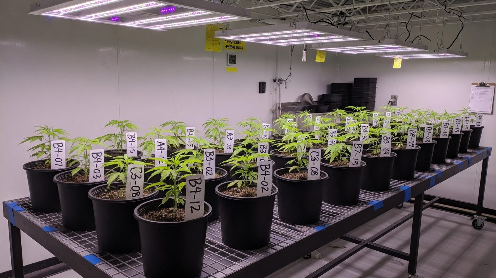
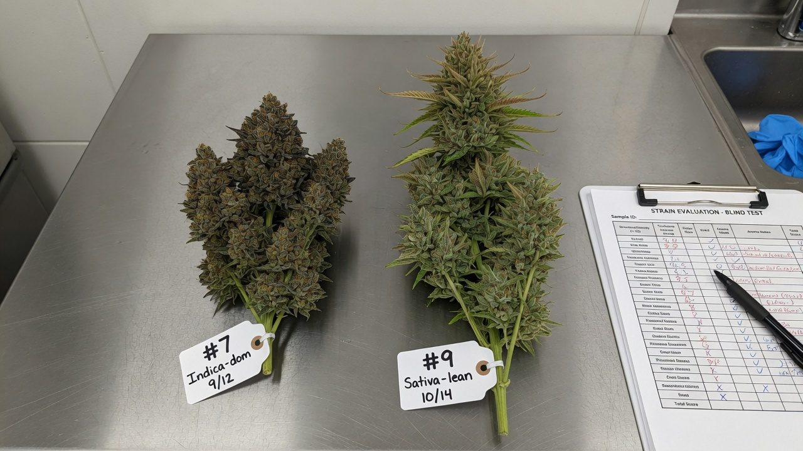
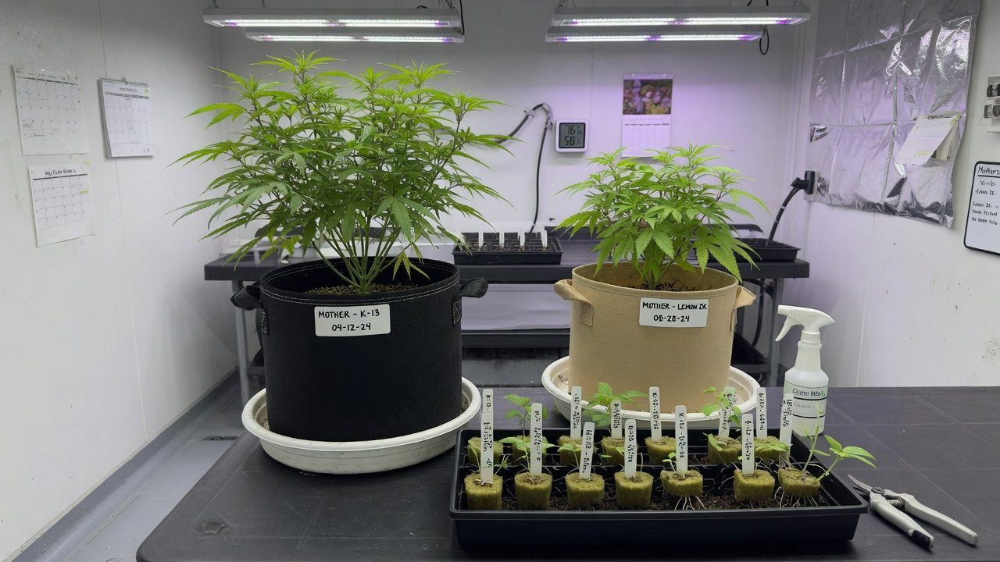
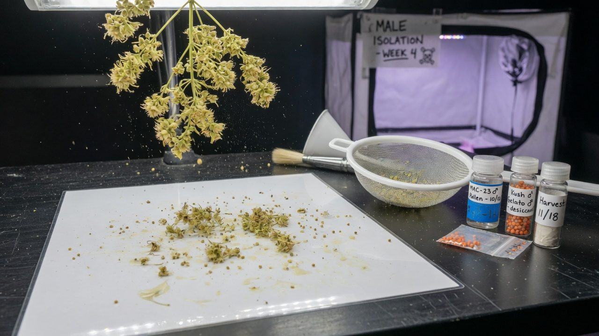

Genetics, seeds and the pheno hunt
Where keeper cultivars actually come from: what genotype, phenotype and chemotype mean, why every seed is a gamble by design, how to run a pheno hunt that finds a winner — and how to keep the cut once you have it.
What this is
Every cultivar worth growing started life as one individual plant that somebody noticed, kept and copied. This paper explains the machinery behind that: what genetics can and cannot promise, why two seeds from the same pack grow into different plants, what the words on a seed listing actually mean, and how to run a phenotype hunt — a structured search through seeds for the one plant worth keeping.
It is written for someone starting from zero, but the process at the end is the same one commercial operators use, just at different scale. No prior genetics knowledge is assumed; every term is defined the first time it appears.
- Seeds vary by design. Cannabis genetics shuffle every generation, and modern lines are barely stabilised, so a pack of seeds is a bag of related-but-different individuals.
- A strain name is a brand, not a guarantee. Samples sold under the same name are often genetically different plants.
- The pheno hunt is the fix: grow many seeds under identical conditions, score them against criteria you wrote down in advance, and keep the best individual as a clone.
- Sample size decides what you can honestly claim. Ten seeds finds the best of ten; a real keeper usually takes more attempts than that.
- The keeper cut is the asset. Mothers, backups and a tissue-culture archive protect it; losing it undoes the whole hunt.
The paper runs in grow order: the three layers of what a plant is, where cultivars came from, why seeds vary, the seed types you can buy, the hunt itself, selection and sample size, then keeping, testing and breeding from the winner.
Accuracy, self-review, and grain-of-salt notes
We've gone to great lengths to keep these guides honest. One of the main ways we do that is self-review: we actively look for claims that are subjective, only lightly backed by literature, or based on grower practice rather than a controlled study — and we call those out instead of dressing them up as settled science.
Often there simply is no paper for the decision you're making. In those cases we're drawing on what other growers report and what has worked in our own rooms. That can still be useful — but it is not a lab proof. Do what works for your plants, your room, and your meters. If a table disagrees with your crop, believe the crop and log the difference.
- Core definitions and measurement units used in the paper
- Safety-critical limits where occupational or standards sources are cited
- Numeric stage targets (light, climate, feed) as starting bands, not laws
- SOPs that work in many rooms but need your genetics and meters
- Any single-number 'guaranteed' yield or potency claim without a multi-site trial
- Controller setpoints copied from another facility without re-calibration
See something glaringly wrong? Tell us and we'll fix it. Please open a GitHub issue with the paper name and what looks off (include a source if you have one): Report an accuracy issue. Local law, labels, and licences always override any recipe here. Inline notes labelled grain of salt flag the highest-risk over-trust points in the text.
Genotype, phenotype, chemotype — the three layers
Three words carry the whole subject. Get them straight and everything downstream — seed types, hunts, testing, breeding — becomes simple mechanics.
The layers are linked but not interchangeable. The THC:CBD ratio is close to hard-wired: it is controlled mainly by one genetic locus with two versions (alleles), and crossing a pure THC plant with a pure CBD plant gives offspring that split into three chemotypes in a predictable 1:2:1 pattern.[1] The absolute potency and terpene numbers, though, move with the grow — light, ripeness, health — because they sit in the environment-facing phenotype layer.
| Chemotype | Dominant cannabinoid | Genetics underneath |
|---|---|---|
| Type I | THC-dominant | two THC-type alleles |
| Type II | Mixed THC + CBD | one of each — always splits again in seed |
| Type III | CBD-dominant | two CBD-type alleles |
A clone in two rooms is one genotype and two phenotypes. When a cut ‘performs differently’ at a mate's place, the genetics did not change — the environment did. Keep this straight and half of all genetics arguments dissolve.
Landraces, polyhybrids, and why strain names mean little
Cannabis was domesticated in East Asia around the early Neolithic, and everything grown today — hemp and drug types alike — descends from that ancestral pool.[3] As people carried it around the world, isolated regions developed landraces: locally adapted, open-pollinated populations shaped by their climate and their farmers over many generations.
Modern drug cannabis is overwhelmingly polyhybrid. Genome-wide studies show the familiar labels only loosely track reality: the reported ‘sativa’ or ‘indica’ ancestry of commercial strains corresponds only moderately to their actual genetic structure.[4] Worse for the shopper, samples sold under the same strain name from different sources are frequently different plants: microsatellite fingerprinting of dispensary samples found genetic inconsistency within most strain names tested.[5]
None of this means genetics do not matter — they matter enormously. It means the name is a weak label for them. A name buys you a rough style guide (probable aroma family, rough structure) and nothing bankable.
Judge seed by the breeder's documentation: named parents, filial generation, how the seed was feminised, tested germination rate, and whether they describe the variation to expect. A breeder who tells you their line still varies is being honest, not weak — the one promising uniformity from a polyhybrid cross is the one guessing.
Why seeds vary: heterozygosity and segregation
Cannabis is naturally an outcrossing species — separate male and female plants, wind pollination, constant mixing. That history makes it highly heterozygous: at many positions in the genome, each plant carries two different versions of the gene.
This is why seed-grown plants differ: every seed is a new random draw from both parents' decks. If both parents are true-breeding (homozygous) for the traits you care about, the first generation — the F1 — is uniform, because every seed draws the same hand. Cross that F1 with itself and the F2 explodes into variety as the alleles recombine. The classic demonstration is chemotype: pure-CBD × pure-THC parents give an all-mixed F1, and the F2 splits 1:2:1 into CBD-dominant, mixed and THC-dominant plants.[1]
Maize breeders solved this a century ago with inbred parent lines and true F1 hybrid seed. Cannabis mostly has not: prohibition kept breeding informal, so the industry runs on heterozygous parents and the variation lands in your tray. A pack of ten seeds is ten related individuals — siblings, not copies.
Breeders and hunters want segregation — it is where new keepers come from. The problem is only being surprised by it: plan for a spread, and the spread works for you.
Stability: what breeders actually mean
Seed catalogues throw around F1, IBL and ‘stable’ loosely. Here is the vocabulary with its real meaning, so you can read a listing critically.
| Label | How it is made | Plant-to-plant uniformity |
|---|---|---|
| F1 | cross of two parents | high only if both parents are true-breeding; otherwise modest |
| F2 | F1 × F1 | lowest — maximum shuffle, and the classic hunting ground |
| F3–F5 | selected line, generation after generation | climbing, if selection is honest |
| IBL | 5+ generations of inbreeding + selection | high for the selected traits |
| S1 | a plant crossed to itself (selfed) | reduced spread around the mother's look — not copies |
| BX1 | offspring × parent | biased toward the recurrent parent, still segregating |
Inbreeding is a trade. Each generation of selfing or sibling crossing roughly halves the remaining heterozygosity, which stabilises traits — but cannabis is an outcrosser, and hammering it inbred can cost vigour (inbreeding depression). The long-term prize is the maize model: two inbred parents crossed to make true F1 seed that is both uniform and vigorous. A handful of seed companies are now working exactly that way; most of the market is not there yet.
- What are the parents, and how many generations in is this line?
- How was the seed feminised — STS reversal of a tested mother, or stress?
- What germination rate do you test to, and how fresh is this lot?
- What variation should I expect in flowering time and structure?
Seed types: regular, feminised, autoflower, S1 and clone-only
Every seed on the market is one of a few constructions, and the construction tells you the sex ratio, the variation to expect, and what the seed is for.
Regular seed is the natural cross: male pollen onto a female plant. Roughly half the seedlings will be male, which flower growers cull — males make pollen, not bud. Regular seed is the cheapest per seed, carries the full genetic shuffle, and is what breeding programmes need, because it is the only type that yields males.
How feminised seed is made — and why it is not ‘weaker’
Feminised seed comes from pollinating a female with pollen from another female that has been chemically persuaded to grow male flowers. The tool is silver thiosulfate (STS): silver ions block the plant's ethylene signalling, and with ethylene action suppressed, a genetically female plant develops viable male flowers.[6] In practice a dilute STS solution is sprayed on a mother a few times around the flip, and she produces pollen a few weeks later.[7] Because that pollen comes from a plant with two X chromosomes, every seed it makes is XX — female. Properly made feminised seed runs at or near 100% female in published trials.[8][9]
The ‘fem seeds are weak / hermie-prone’ folklore confuses the method with the parents. STS changes hormone signalling on the mother for a few weeks; it does not mutate the DNA that goes into the seed. Where feminised seed earns a bad reputation is parent choice: seed made by stressing plants until they self-pollinate (rodelization) actively selects for the tendency to throw male flowers under stress, and that tendency is heritable.[10] Ask how the seed was made. STS reversal of a stable, tested mother is the standard; stress-derived seed is the lottery.
Autoflower seed carries a day-neutral flowering trait inherited from Cannabis ruderalis: the plant flowers on age, not photoperiod. The major locus behind it (Autoflower1) behaves as a simple recessive, which is why both parents must carry it and why crossing an auto to a photoperiod plant gives photoperiod offspring that merely carry the allele.[11] Autos trade ultimate size and the ability to hold a mother plant (you cannot keep a plant in veg that flowers on age) for speed and simplicity.
S1 seed is a plant selfed: a female reversed with STS and used to pollinate herself. The offspring cluster around the mother's character but they are not copies — every locus where she was heterozygous still segregates. An S1 of a famous cut is a neighbourhood around the cut, not the cut.
Clone-only means the cultivar exists only as a vegetatively copied cut — there is no seed line. That is what a keeper becomes after a hunt, and it is the only way to hold one exact genotype over time. See the cloning paper for the mechanics.
| Type | Sex ratio | Uniformity | Best for | Watch for |
|---|---|---|---|---|
| Regular | ~50/50 | low | breeding, big hunts | budget half the pack to the male cull |
| Feminised | ~99%+ female | low–modest | hunts and production pops | how it was made — STS vs stress |
| Autoflower | as sold (reg or fem) | low–modest | speed, small spaces | no mothers possible; transplant stress costs yield |
| S1 | ~99%+ female | modest | exploring around a famous cut | sold as ‘the cut in seed form’ — it is not |
| Clone-only cut | female | exact copy | holding a proven keeper | disease travels with cuttings — screen incoming material |

The pheno hunt, step by step
A pheno hunt is a controlled comparison: grow a batch of seeds under conditions as identical as you can manage, score every plant against criteria fixed in advance, and keep the best individual as a clone. The enemy is confounding — any difference in position, pot, feed or timing that lets a mediocre plant look special, or hides a great one.
- 1Size the hunt before you germinateDecide how many seeds your space can carry to harvest as one cohort, and be honest about the odds that number buys (next section). Write the scoring rubric now, before you have favourites.
- 2Pop everything at once, tag everythingGerminate the whole batch together (see seeds and germination). At first true leaves, give every plant a permanent ID — pack code plus seed number — and make the tag follow the plant through every transplant. An unreadable hunt is a wasted hunt.
- 3Sex early and cull males (regular seed)Photoperiod plants show sex at preflowers around week 4–6 of veg; a leaf-swab genetic test can call sex weeks earlier at the seedling stage.[12] Unless you are breeding, males leave the room before any pollen sac opens.
- 4Veg to a fair comparisonSame pots, same medium, same feed, same topping policy for every plant. Note veg vigour and rooting speed in the log, but resist selecting on them — the call happens after flower, on the full picture.
- 5Take backup cuts of every candidateTwo or three cuttings per plant, labelled with the parent's ID, rooted and parked in veg before the flip. This is the step beginners skip and regret: flower reveals the winner, and without a cut the winner is already dead when you meet it.
- 6Flower identical, rotate positionsOne room, one recipe, all plants flipped together. Rotate positions weekly so edge effects and hot spots average out instead of crowning whoever stood under the best light.
- 7Score weekly against the rubricStretch, structure, onset of flowering, pest and mould events, aroma as it develops. Write numbers, not vibes. Do not crown anyone at week 3 — loud early terps are not a finished plant.
- 8Harvest, weigh and assess per plantDry weight per plant, kept separate through dry and cure. Send samples for testing if you can; if hash is the goal, run a small wash or press trial per candidate — flower quality and resin yield are different traits.
- 9Verify the finalists in round 2Flower the backup cuts of your top two or three side by side. The keeper is the one that repeats its performance as a clone. One good run is an audition; two is a cultivar.
Cuts before the flip. The hunt's product is a clone — if a plant has no rooted backup, it is not really in the hunt, whatever it smells like.

Selection criteria beyond potency
Potency is the loudest criterion and the worst one to select on alone. A 26% plant that moulds every autumn, stretches into the lights and roots badly is a liability with a good lab number. Operators score across the whole job the plant has to do:
| Criterion | What to look at | How to measure |
|---|---|---|
| Potency / chemotype | total cannabinoids, THC:CBD type | lab test per candidate |
| Terpene profile | intensity and character, raw and cured | nose at weeks 6+, cured jar test; lab terps if available |
| Yield | dry weight per plant at equal spacing | scale, after cure |
| Structure | internode spacing, branch angles, self-support, larf ratio | eyes and notes through flower |
| Flowering time | days from flip to ripe trichomes | log the date each candidate finishes |
| Mould / pest resilience | botrytis, mildew and mite events under equal pressure | incident log per plant |
| Trichome yield (hash) | resin return and head quality if hash is the goal | small wash or press trial per candidate |
| Clone-ability | strike rate and days to root from the backup cuts | you already have this data from step 5 |
| Stretch | height multiple from flip to peak | measure at flip and day 21 |
Decide in veg what a 3 on mould resilience is worth against a 3 on terps, and which scores are automatic culls. Rubrics written after smelling week-5 flower are rationalisations — the halo effect of one spectacular trait will launder every other weakness.
Sample-size honesty: 10 seeds vs 100
Here is the arithmetic nobody puts on the seed pack. Suppose a genuine keeper — a plant that clears your bar on every criterion — shows up in about one seed in twenty from a decent cross. That 5% is generous for a strict rubric, and it compounds like this:
This is not an argument against small hunts — it is an argument for honest language. Ten seeds reliably finds the best plant you had, and that plant may well be worth keeping and growing for years. It is just unlikely to be the once-in-a-line individual that commercial hunts chase by popping hundreds to thousands of seeds and keeping one or two. Selection intensity is the whole difference: best-of-10 and best-of-500 are different animals wearing the same word.
- Say ‘best of N’, and know your N. It calibrates every claim you make about the plant afterwards.
- Never crown after one run. A single grow confounds genotype with position, season and luck — round 2 from the backup cuts is what separates a keeper from a good week.

Keeping the cut: mothers, backups, archive
The hunt ends with the most valuable object in the facility: one plant. From here the job is redundancy. A keeper held as a single mother is one root-rot event, one viroid infection or one labelling mistake away from not existing.
Screen before you commit. Hop latent viroid (HpLVd) — the ‘dudding’ pathogen — spreads silently through cuttings and tools, and infected stock can look normal for months; test the candidate before it becomes a mother, and treat one negative as provisional rather than proof, because low, uneven viroid levels can slip past a single test.[13]
For long-term insurance, a tissue-culture archive holds the genotype in clean storage off the grow floor. Archive early and at low passage: plants held in culture accumulate small somatic mutations roughly in proportion to how many times they are subcultured, so the best archival copy is made once, young, and disturbed as little as possible.[14]
Every grower who has lost a cut says the same thing afterwards: the second mother and the backup tray cost almost nothing, and the cut was irreplaceable. Redundancy is not paranoia — it is the price of admission for calling something a keeper.
Genetic testing: what a swab can and cannot tell you
Cheap genetic assays now cover three jobs that used to cost weeks of grow time. All three run off a small leaf sample.
| Test | What it tells you | What it cannot tell you | When to use it |
|---|---|---|---|
| Sex marker (PCR) | male vs female, from the seedling stage[12] | whether a female will stay stable under stress | regular-seed hunts — cull males weeks before preflowers |
| Chemotype marker (THCAS/CBDAS) | type I / II / III — which cannabinoid ratio the plant is wired for[12][1] | final THC %, terpene profile, yield — those are phenotype | breeding projects; sorting CBD work from THC work early |
| HpLVd screen (RT-PCR) | whether the viroid is detectable in that tissue on that day[13] | that the plant is clean — low, uneven levels mean one negative is provisional | incoming cuts, candidate keepers, mothers on a schedule |
The boundary to hold in your head: a swab reads the genotype layer. Sex and chemotype class live there, so markers call them well — the synthase-gene region they probe is well mapped, if messy.[2] Potency numbers, terpene character, vigour and yield live in the phenotype layer, shaped by the grow. No swab predicts them, whatever the marketing says.
Markers prune the search space — fewer males fed, CBD plants out of a THC hunt early. The hunt itself still happens in the flower room, because that is where phenotype exists.

Breeding basics for growers
Once you hold a keeper, the next itch is making seed from it. Two modes exist. Open pollination — males and females loose in one space — is how landraces work: maximum recombination, zero control, fine for making a big diverse seed batch from a population you like. A controlled cross is one chosen father onto chosen branches of one chosen mother, and it is the only way to know what you made.
- Isolate the male. A separate space with separate airflow — shared HVAC is shared pollen. Let it open its first flowers over paper or glass.
- Collect and dry the pollen. Tap it free, let it dry for a day or two, then pass it through a fine sieve to remove flower debris.
- Store it cold and dry. Small airtight vials with a desiccant, labelled, in the freezer. Viability fades over months — use fresh where you can, and test a pinch on one branch before trusting a stored batch.
- Pollinate selectively. Paint pollen onto a few lower branches of the mother with a small brush, tag those branches, and mist nearby surfaces afterwards — water kills stray pollen.
- Wait, then harvest seed. Seeds mature in roughly 4–6 weeks; ripe ones are dark, hard and striped. Dry them with the flower, then store cool, dark and dry.
The reason for all the ceremony: pollen is nearly invisible and absurdly effective. One open male — or one stress-induced hermaphrodite — can seed a whole flower room, and seed set by accidental self-pollination quietly carries the parent's instability forward.[10] Breeding in the same building as sinsemilla production is a containment exercise first and a romance second.
Dedicated clothes for the male room, hands and tools washed after contact, no shared airflow, and males culled before flowers open anywhere outside the breeding space. If you would not handle powder that costs you a seeded crop, do not handle pollen casually.
IP and licensing, lightly
Cultivar ownership is real but patchy, and it varies by jurisdiction. A few generic truths hold. Strain names are mostly unprotected marketing, and as covered earlier, often do not even track a consistent genotype.[5] Actual protection, where it exists, attaches to the plant material or the registered variety: plant variety rights / plant breeders' rights schemes, patents in some countries, and increasingly, contract terms attached to licensed clone releases — nurseries supplying verified cuts under agreements that limit propagation, resale or breeding.
Practical hygiene for an operator, anywhere: keep records of where every cultivar came from and under what terms; read the terms on licensed cuts before breeding from or distributing them; and treat your own keeper's provenance log — hunt records, dates, test results — as the documentation you would want if you ever release or license it. For anything beyond that, the rules are local: check them where you are before selling genetics in any form. This is orientation, not legal advice.
Classic ways a hunt fails
Most failed hunts fail the same six ways, and every one is preventable for the cost of discipline.
Candidates grown in different rooms, seasons or feeds, then compared as if the differences were genetic. Confounding beats selection every time — one cohort, one recipe, or the scores mean nothing.
The winner is identified at harvest — and was never cloned. The hunt produced a great jar and no cultivar. Cuts before the flip, every candidate, no exceptions.
One plant smells loud early and the rubric dies on the spot. Early aroma is one data point; finish, yield, resilience and the cured product are the decision.
Crowned after a single grow, scaled straight to production, and the magic does not repeat — the first run was position and luck. Round 2 from backups is the verification step, not a formality.
Tags lost at transplant, trays swapped, ‘the good one’ now unidentifiable among survivors. The whole hunt rests on IDs surviving every touch — make tags physical, redundant and boring.
A breeding male, or an unnoticed hermaphrodite, shares air with the hunt. Seeded candidates, corrupted scores, and next year's mystery seedlings in the room corners.
Troubleshooting
| Symptom | Most likely cause | What to do |
|---|---|---|
| Plants from one pack all look different | Normal polyhybrid segregation — siblings, not copies | Nothing is wrong. Tag, score, select — that spread is the hunt |
| Feminised seed threw male or intersex flowers | Stress (light leaks, heat, irregular timers) — or stress-derived seed | Audit the dark period and environment first; if the room is clean, question the seed source[10] |
| Autos flowered tiny at week 3–4 | Normal age trigger, magnified by early stunting (transplant shock, cold, overwatering) | Start autos in their final pot and keep early weeks gentle; size comes from an easy veg[11] |
| Keeper clone underperforms its seed-plant run | Round-1 luck (position, season) — or clone health, not genetics | Judge round 2 fairly: healthy cuts, equal conditions. If it repeats poorly, it was never the keeper |
| Sex swab said female, plant made pollen sacs | Marker read the genotype correctly — stress flipped the expression | Treat as an intersex event: remove or isolate, fix the stressor, do not breed from it casually[12] |
| Great flower pheno, poor hash returns | Flower quality and resin yield are separate traits | If hash is the goal, wash-test candidates during the hunt, not after crowning |
| HpLVd test negative but the plant duds on | Low or uneven viroid levels can evade one test — or the cause is elsewhere | Retest (root tissue, repeat sampling) and review environment and nutrition in parallel[13] |
| Seeds found in an unpollinated room | A hermaphrodite event or pollen escape you did not see | Inspect for intersex flowers, audit airflow paths from any male space, tighten the dark period |
The mental model: lottery, rubric, vault
- The lottery. Seeds are tickets. Heterozygous parents guarantee the draw is random, names on the packet do not change the odds, and the number of tickets — not enthusiasm — sets your chance of a real keeper.
- The rubric. Selection only means anything against criteria written before you met the plants, applied to plants grown under the same conditions, and verified in a second round. Everything else is picking a favourite.
- The vault. The moment a cut earns the name keeper it becomes the most valuable thing you own: two mothers, rolling backups, disease screening and a tissue-culture archive are what ‘keeping’ actually means.
From here, the practical neighbours: seeds and germination for getting the tickets sprouted, cloning for taking and rooting the cuts the hunt depends on, and tissue culture for the archive that makes a keeper permanent. The genetics do not care what the packet said — pop enough seeds, score them honestly, verify the winner, and protect it like it matters. It does.
References
- de Meijer EPM, Bagatta M, Carboni A, Crucitti P, Moliterni VMC, Ranalli P, Mandolino G (2003). The inheritance of chemical phenotype in Cannabis sativa L. Genetics 163(1):335-346. https://academic.oup.com/genetics/article/163/1/335/6052757
- Laverty KU, Stout JM, Sullivan MJ, Shah H, Gill N, Holbrook L, Deikus G, Sebra R, Hughes TR, Page JE, van Bakel H (2019). A physical and genetic map of Cannabis sativa identifies extensive rearrangements at the THC/CBD acid synthase loci. Genome Research 29(1):146-156. https://genome.cshlp.org/content/29/1/146
- Ren G, Zhang X, Li Y, Ridout K, Serrano-Serrano ML, Yang Y, Liu A, Ravikanth G, Nawaz MA, Mumtaz AS, Salamin N, Fumagalli L (2021). Large-scale whole-genome resequencing unravels the domestication history of Cannabis sativa. Science Advances 7(29):eabg2286. https://www.science.org/doi/10.1126/sciadv.abg2286
- Sawler J, Stout JM, Gardner KM, Hudson D, Vidmar J, Butler L, Page JE, Myles S (2015). The genetic structure of marijuana and hemp. PLoS ONE 10(8):e0133292. https://journals.plos.org/plosone/article?id=10.1371/journal.pone.0133292
- Schwabe AL, McGlaughlin ME (2019). Genetic tools weed out misconceptions of strain reliability in Cannabis sativa: implications for a budding industry. Journal of Cannabis Research 1:3. https://jcannabisresearch.biomedcentral.com/articles/10.1186/s42238-019-0001-1
- Mohan Ram HY, Sett R (1982). Induction of fertile male flowers in genetically female Cannabis sativa plants by silver nitrate and silver thiosulphate anionic complex. Theoretical and Applied Genetics 62:369-375. https://link.springer.com/article/10.1007/BF00275107
- Lubell JD, Brand MH (2018). Foliar sprays of silver thiosulfate produce male flowers on female hemp plants. HortTechnology 28(6):743-747. https://doi.org/10.21273/HORTTECH04188-18
- Flajsman, M., Slapnik, M., & Murovec, J. (2021). Production of Feminized Seeds of High CBD Cannabis sativa L. by Manipulation of Sex Expression and Its Application to Breeding. Frontiers in Plant Science, 12, 718092. https://doi.org/10.3389/fpls.2021.718092 https://pmc.ncbi.nlm.nih.gov/articles/PMC8591233/
- Monthony, A. S., Page, S. R., Hesami, M., & Jones, A. M. P. (2021). pH and chemical sterilization / sex induction in Cannabis. See: Optimized guidelines for feminized seed production in high-THC Cannabis cultivars (2024). Frontiers in Plant Science, 15, 1384286. https://doi.org/10.3389/fpls.2024.1384286 https://pmc.ncbi.nlm.nih.gov/articles/PMC11557428/
- Punja, Z. K., & Holmes, J. E. (2020). Hermaphroditism in Marijuana (Cannabis sativa L.) Inflorescences — Impact on Floral Morphology, Seed Formation, Progeny Sex Ratios, and Genetic Variation. Frontiers in Plant Science, 11, 718. https://doi.org/10.3389/fpls.2020.00718 https://www.frontiersin.org/journals/plant-science/articles/10.3389/fpls.2020.00718/full
- Toth, J. A., Stack, G. M., Carlson, C. H., & Smart, L. B. (2022). Identification and mapping of major-effect flowering time loci Autoflower1 and Early1 in Cannabis sativa L. Frontiers in Plant Science, 13, 991680. https://doi.org/10.3389/fpls.2022.991680 https://pmc.ncbi.nlm.nih.gov/articles/PMC9533707/
- Toth JA, Stack GM, Cala AR, Carlson CH, Wilk RL, Crawford JL, Viands DR, Philippe G, Smart CD, Rose JKC, Smart LB (2020). Development and validation of genetic markers for sex and cannabinoid chemotype in Cannabis sativa L. GCB Bioenergy 12(3):213-222. https://onlinelibrary.wiley.com/doi/10.1111/gcbb.12667
- Transmission, spread, longevity and management of hop latent viroid in cannabis in North America (2025). PMC. https://pmc.ncbi.nlm.nih.gov/articles/PMC11902214/
- Torkamaneh D et al. (2024). Somatic mutation accumulation in micropropagated cannabis is proportional to the number of subcultures. Plants, 13(14):1910. https://pmc.ncbi.nlm.nih.gov/articles/PMC11279941/
Citations marked in-text as [n] map to this list. Primary literature and official guidance except where noted. Cannabis tissue culture is strongly genotype-dependent, verify dilutions, hormone doses and local regulations against the primary sources before relying on them.